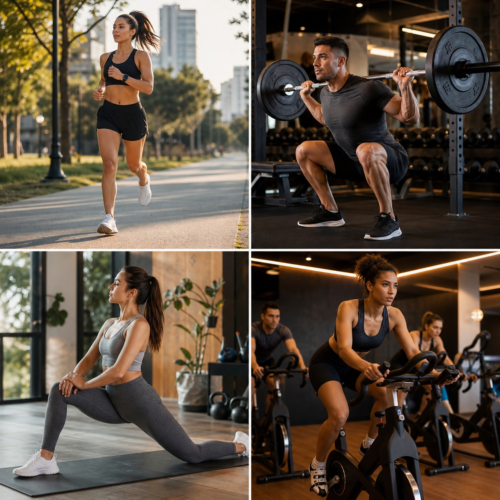

Prescrever e revisar treinos
Registre musculacao, cardio e historico de atividades com leitura simples para o aluno.
Aplicativo para acompanhamento fitness
Prescreva treinos, acompanhe evolucao, organize bioimpedancia, monitore sinais vitais e gere fichas limpas em uma plataforma simples.

Menos retrabalho, mais contexto e uma experiencia melhor para quem acompanha alunos presencialmente ou online.
Abrir painelFuncionalidades
Registre musculacao, cardio e historico de atividades com leitura simples para o aluno.
Centralize peso, medidas, fotos, bioimpedancia e comparativos em uma linha clara.
Base pronta para Fitbit e Google Health, com notificacoes e permissoes controladas.
Transforme dados soltos em um documento objetivo para consulta e acompanhamento.
Para o aluno
O aluno visualiza sua rotina, acompanha metas, registra atividades e recebe uma leitura mais organizada da propria evolucao.
Gestao
O painel resume frequencia, IMC, calorias, treinos, bioimpedancia e alertas do relogio.
Documento
Um resumo visual e objetivo para discutir progresso sem poluicao visual.
Quem usa
"Sai das anotacoes espalhadas e consigo enxergar o aluno inteiro: treino, bioimpedancia e rotina."
Marina Costa Personal trainer"A ficha vital deixa a conversa muito mais clara. O aluno entende melhor o proprio progresso."
Rafael Menezes Consultoria online"O app passa uma imagem muito mais profissional do meu acompanhamento."
Bianca Torres TreinadoraAssinatura
Use o Vitalissy para organizar alunos, treinos, historico corporal e sinais vitais.
Nao. Ele organiza dados para apoiar a conversa entre profissional e aluno.
Sim. A proposta e centralizar rotina, treino, agenda e evolucao em um painel unico.
As conexoes sao autenticadas, tokens sao criptografados no backend e o usuario pode remover permissoes.